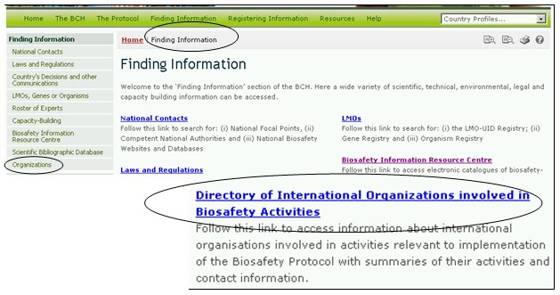
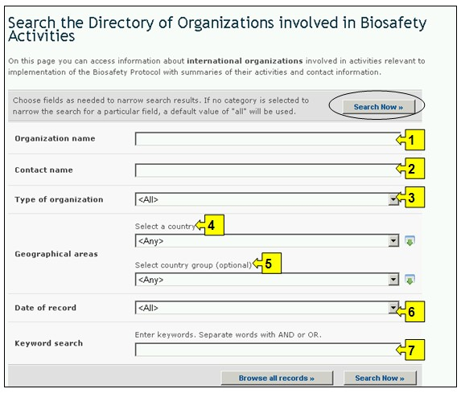
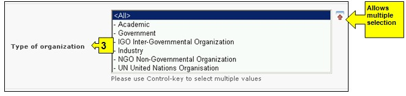
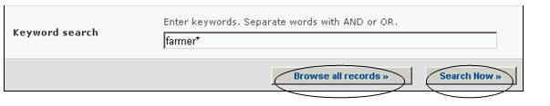
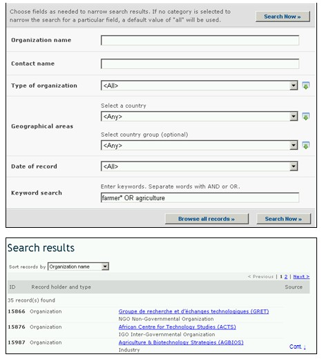
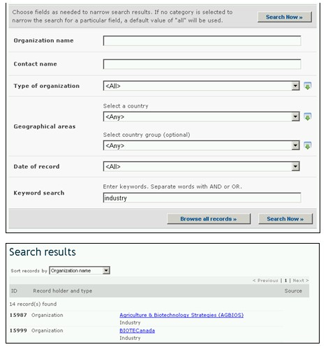

URL: http://bch.cbd.int/database/organizations/
La naturaleza mundial y multidisciplinaria del Protocolo provee una amplia base de usuarios para su implementación, extendiéndose más allá de las Partes del acuerdo. Según esto, el CIISB mantiene una base de datos de organizaciones involucradas en asuntos de bioseguridad.
Una interfase de búsqueda de información acerca de Organizaciones puede ser obtenida en el menú desplegable Búsqueda de Información localizado en la barra de navegación, o en vínculo del menú ubicado en la barra izquierda de la página Búsqueda de Información, o en el vínculo del texto Directorio de Organizaciones Internacionales involucradas en Actividades de Bioseguridad en la misma página.

La interfase de búsqueda en esta página permite a los usuarios obtener información acerca de organizaciones involucradas en bioseguridad. Ésta información incluye un resumen de las actividades y la información de contacto de la organización.
En la página Búsqueda del Directorio de Organizaciones Internacionales involucradas en Actividades de Bioseguridad hay siete cuadros de criterios de búsqueda. Cada uno de estos tiene un menú desplegable en el que se puede seleccionar el criterio de búsqueda. La búsqueda por defecto es el primer elemento que aparece en la lista desplegada. En la parte derecha de cada cuadro, un botón le permite al usuario activar selecciones múltiples. Una vez se está en el modo de selección múltiple, es posible agregar más criterios haciendo clic en el criterio y presionando al mismo tiempo la tecla Ctrl (Control).

Cuadro 1 [Nombre de la organización] brinda al usuario la opción de buscar por el nombre de la organización.

Cuadro 2 [Nombre del contacto] permite al usuario buscar por el apellido de un contacto específico dentro de la organización.

Cuadro 3 [Tipo de organización] permite al usuario afinar la búsqueda según una o más de las categorías.

Cuadro 4 [Seleccione un país] Un menú desplegable presenta una lista de todos los países, de tal modo que los usuarios pueden seleccionar uno o más países específicos en cada búsqueda.

Cuadro 5 [Seleccione un grupo de países] Un menú desplegable presenta una lista que contiene las mayores agrupaciones geográficas y políticas de países y permite seleccionar solamente aquellos registros que han sido enviados por los miembros del grupo o grupos seleccionados.

Cuadro 6 [Fecha del registro] permite al usuario que limite la búsqueda de acuerdo con la fecha en la que el registro ha sido ingresado al CIISB. El menú desplegable proporciona un número de opciones para limitar la búsqueda solamente a aquellos registros que han sido enviados dentro del período de tiempo seleccionado (Ej: ‘último día’, ‘último mes’, ‘último año’, etc.).

Cuadro 7 [Búsqueda por palabras clave] brinda la oportunidad de utilizar palabras clave para restringir la búsqueda. El usuario puede utilizar la sintaxis estándar de palabras clave (combinación de los operadores Y/O) para buscar con múltiples palabras, o partes de palabras (Ej. “Importación O Exportación”). La búsqueda con palabras clave permite obtener solamente registros que contengan el texto exacto y no sinónimos que no hayan sido insertados (Ej: Una búsqueda con la palabra clave “Maíz” producirá una lista de registros que contienen la palabra “Maíz” pero no los registros que contengan “Zea mays”).

La página de búsqueda ofrece tres botones para obtener la lista de registros. El botón Busque Ahora (tanto en la parte superior como inferior de la interfase de búsqueda) permite al usuario activar una búsqueda basada en los criterios seleccionados en los cuadros de la tabla de búsqueda. Los resultados de búsqueda son ordenados alfabéticamente, por defecto, de acuerdo con el nombre de país. El botón Busque todos los registros (en la parte inferior de la interfase de búsqueda) permite al usuario obtener una lista de todos los registros en esta base de datos.

Las páginas de Resultados de Búsqueda poseen una ventana de ordenamiento arriba de la lista de los registros encontrados. Esta puede utilizarse para ordenar los registros de acuerdo con criterios específicos para esa categoría de información. Observe que los resultados cambiarán cuando el usuario ajusta los criterios de búsqueda.

Ejemplo. Un usuario desea identificar organizaciones que trabajan con granjeros e ingresa granjero O agricultura en el cuadro de búsqueda Palabra clave. Los resultados reportan varias organizaciones vinculadas a granjeros. Para restringir la búsqueda a proyectos vinculados al sector privado, el usuario selecciona industria en el cuadro tipo de organización.

